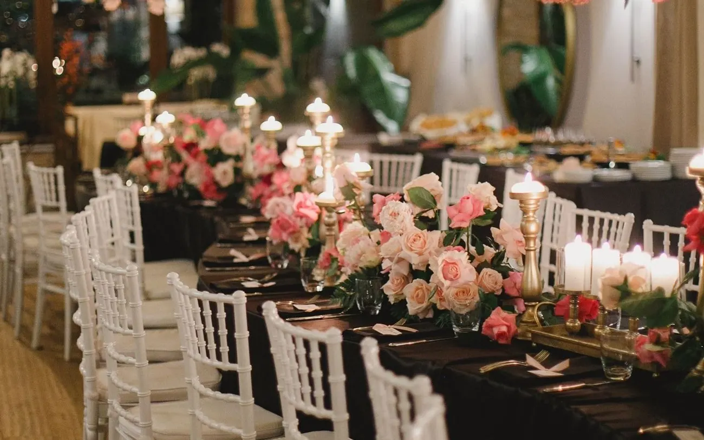
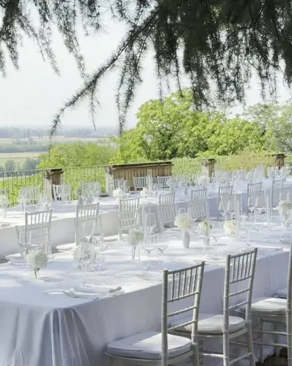
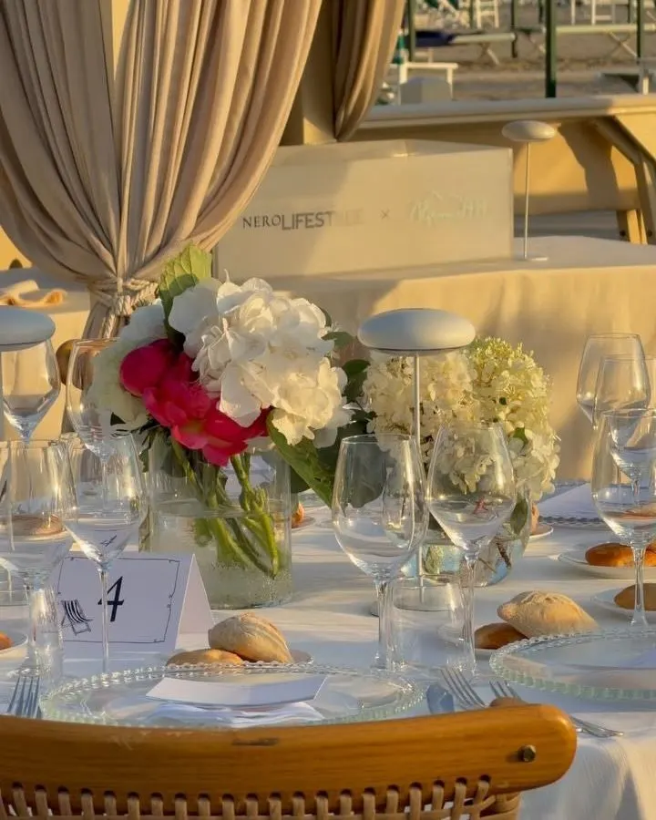
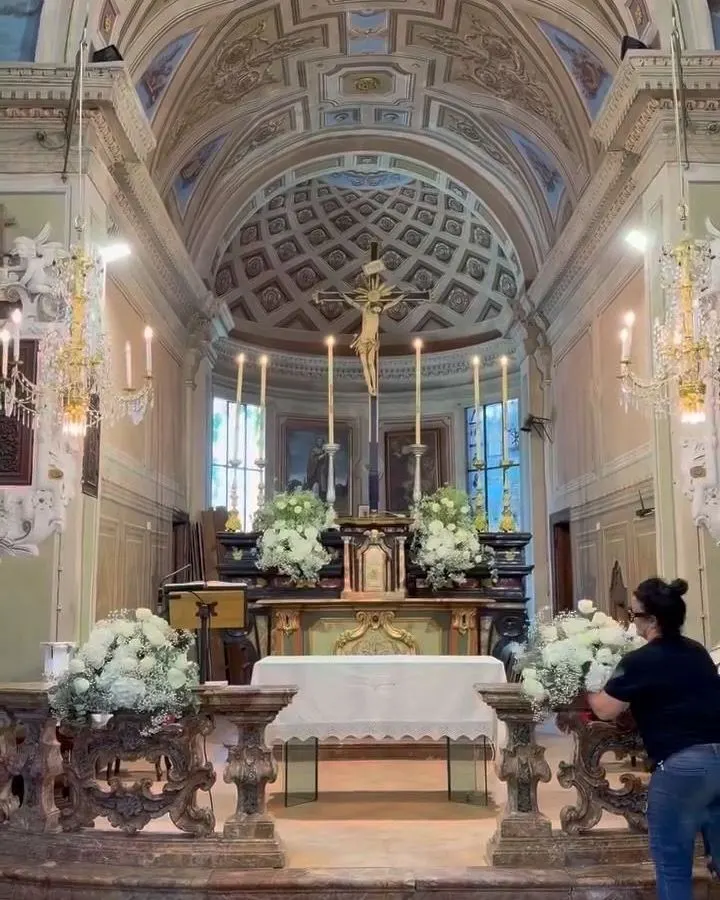
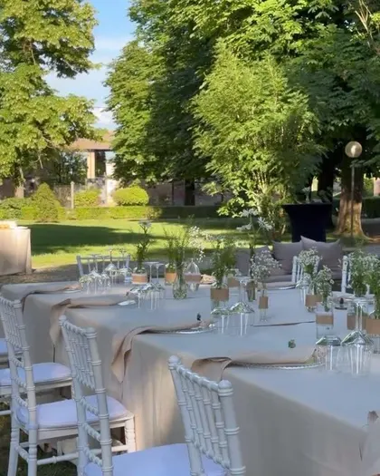
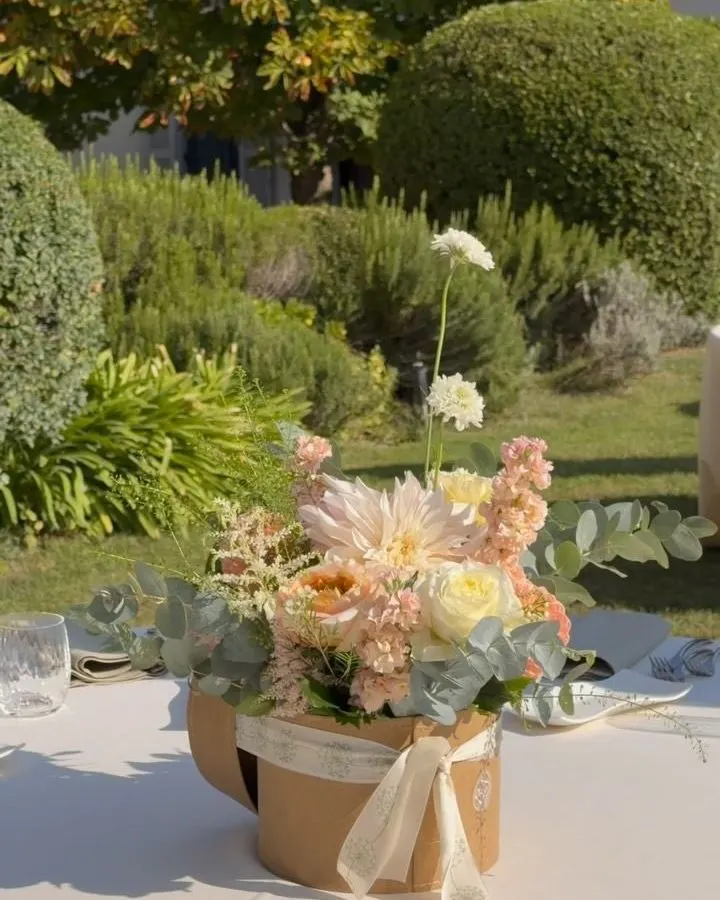

Dal primo incontro all’ultimo petalo.
Partiamo spesso da idee ancora confuse e le facciamo diventare un progetto: la chiesa, il tavolo imperiale, il bouquet, ogni angolo della location.






Non solo matrimoni: battesimi, lauree, cene in piazza, vetrine e allestimenti per locali.
Per i matrimoni
Fate allestimenti per matrimoni fuori Voghera?
Sì: seguiamo matrimoni ed eventi in tutto l’Oltrepò, nel Tortonese e oltre. Raccontaci dove e quando, e partiamo da lì.
Con quanto anticipo bisogna prenotare per un matrimonio?
Prima ci sentiamo, meglio è: il primo incontro serve a conoscerci e a capire i tuoi desideri, senza impegno.